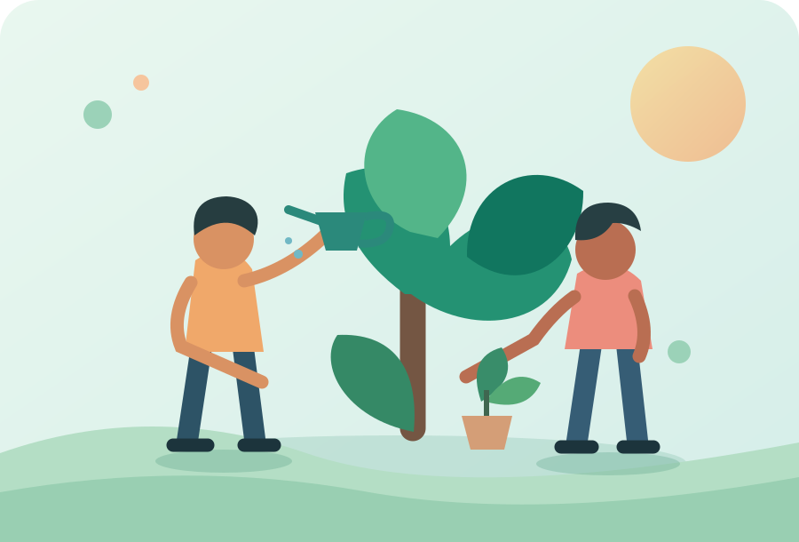
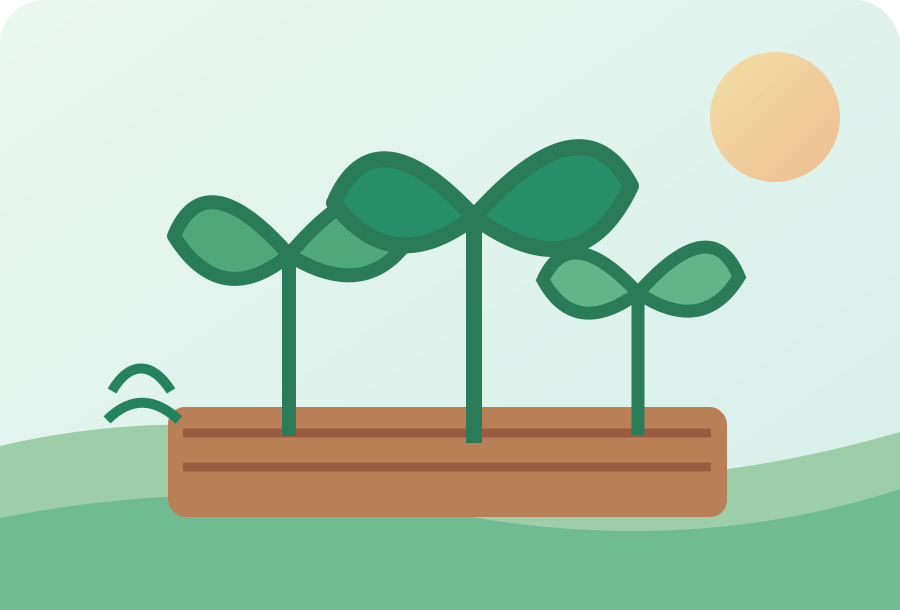
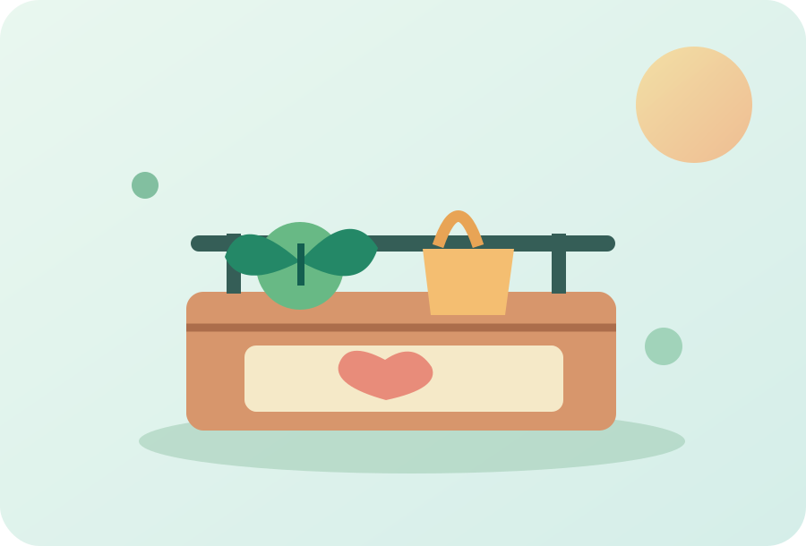

Missão
Estimular oportunidades por meio de iniciativas sociais, educação e ações sustentáveis.
Juntos fazemos a diferença
A Raízes do Amanhã é uma organização fictícia criada para mostrar como educação, cuidado ambiental e solidariedade podem transformar uma comunidade.

Quem somos
Este é um exemplo de site institucional para uma ONG. Nosso propósito ilustrativo é reunir pessoas dispostas a ajudar e apresentar projetos sociais de forma clara e acolhedora.
Estimular oportunidades por meio de iniciativas sociais, educação e ações sustentáveis.
Construir uma comunidade mais participativa, acolhedora e com oportunidades para todos.
Respeito, transparência, colaboração, empatia e responsabilidade com o meio ambiente.
Nossas iniciativas
Conheça algumas ações demonstrativas que uma organização social poderia desenvolver.

Plantio colaborativo e oficinas de conscientização ambiental.
Saiba mais →
Mobilização de voluntários para campanhas de apoio comunitário.
Saiba mais →Entre em contato
E-mail ilustrativo: contato@raizesdoamanha.example
Área de atuação: comunidades brasileiras (cenário fictício).